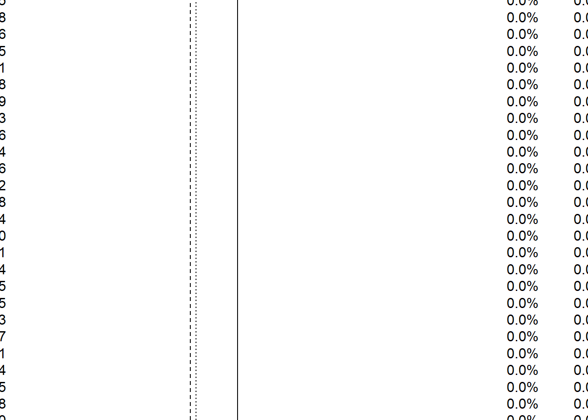
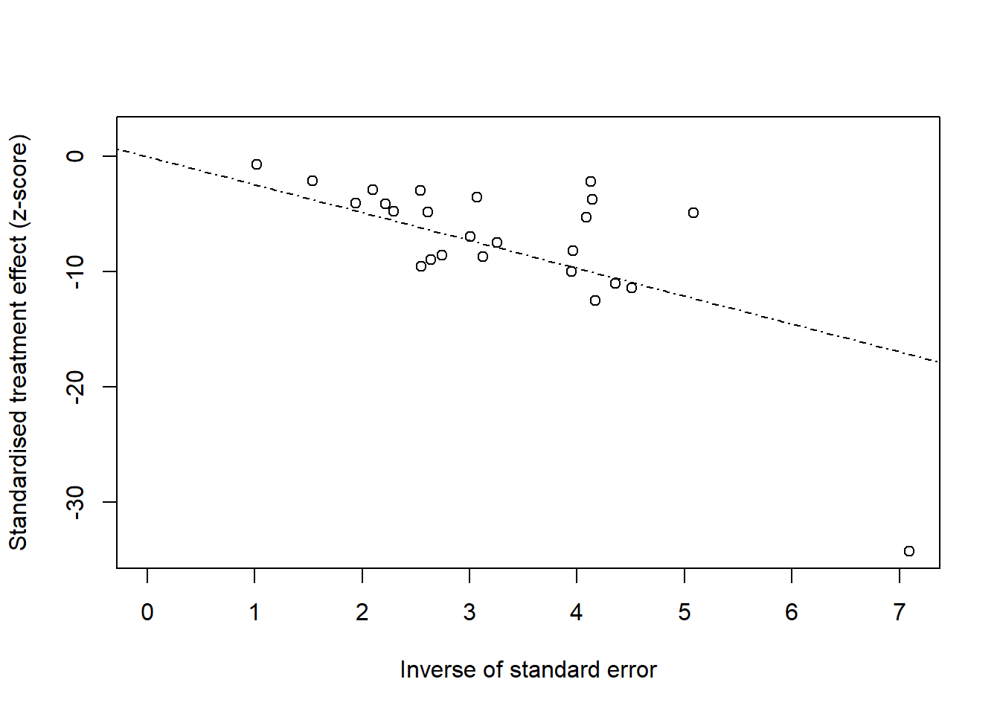
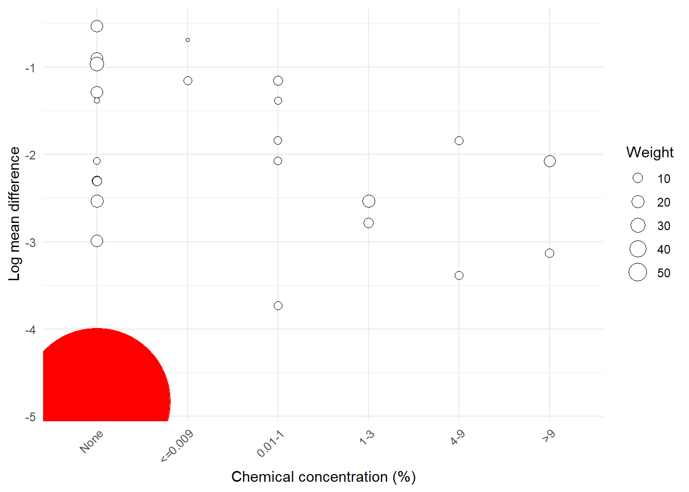
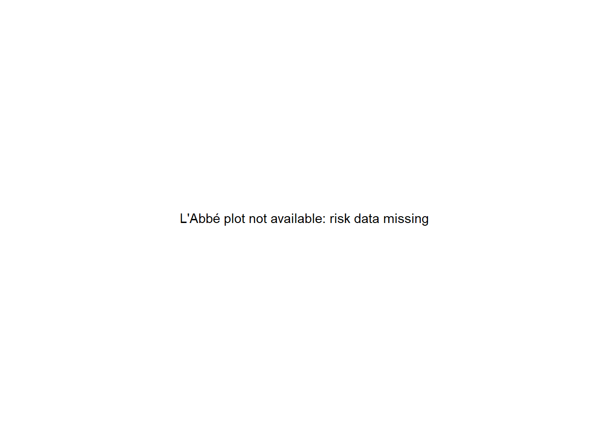
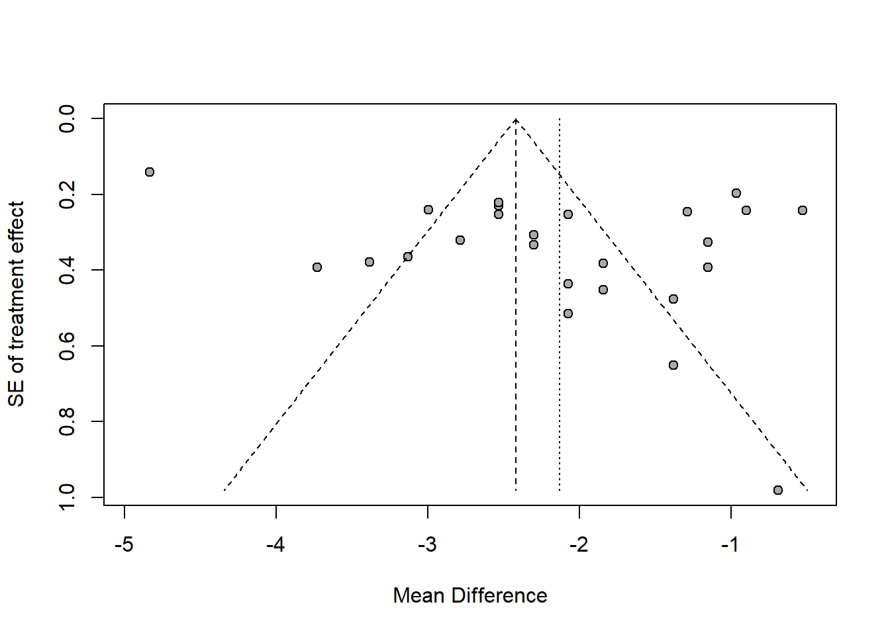
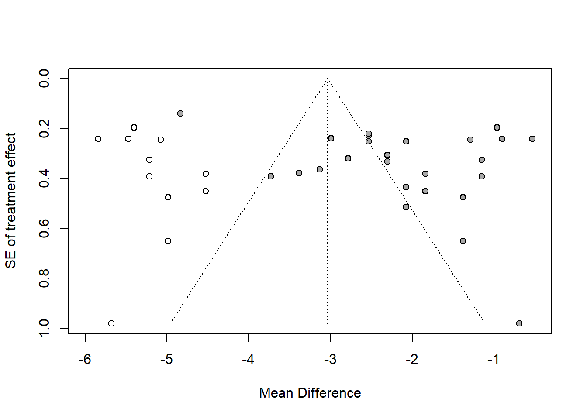
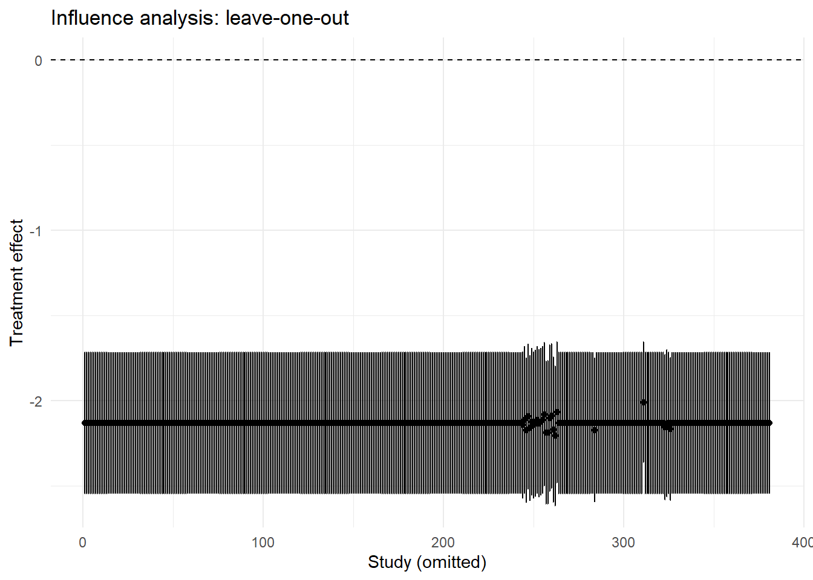

library(dplyr)
library(haven)
library(ggplot2)
library(meta)
library(metafor)
library(broom)
library(purrr)
library(glue)
theme_set(theme_minimal())
data_dir <- file.path("..", "mer_data_stata")
salm <- read_dta(file.path(data_dir, "salm_ma.dta")) |>
mutate(across(where(haven::is.labelled), haven::as_factor))22 SME Chapter 21: Meta-analysis
Note
This chapter reproduces and expands upon the analyses from the original Methods in Epidemiologic Research (MER) Chapter 28 (Dohoo, Martin, & Stryhn, 2012) using R with data sourced from ../mer_data_stata/salm_ma.dta. The chapter covers meta-analysis - essential methods for combining results from multiple studies to obtain more reliable and precise estimates of treatment effects and associations.
22.1 Replication Notes
- Data dependencies:
../mer_data_stata/salm_ma.dta. - Required R packages:
dplyr,haven,ggplot2,meta,metafor,broom,purrr,glue. - Setup tips: Install with
install.packages(c("dplyr","haven","ggplot2","meta","metafor","broom","purrr","glue")). - Execution: Run the notebook sequentially to regenerate fixed/random meta-analyses, stratified summaries, meta-regressions, funnel plots, trim-and-fill adjustments, and influence diagnostics.
22.2 Theoretical Background
Understanding Meta-Analysis
Before we combine studies, let’s understand what meta-analysis is and why it’s powerful. Meta-analysis is a cornerstone of evidence-based medicine and epidemiology, allowing researchers to synthesize evidence from multiple studies (Dohoo, Martin, & Stryhn, 2012; Kirkwood & Sterne, 2003; Rothman, Huybrechts, & Murray, 2024):
22.2.1 What is Meta-Analysis?
Meta-analysis is a statistical method to combine results from multiple studies. It’s like gathering evidence from many sources to get a more reliable answer than any single study can provide.
Think of it like: Instead of relying on one study (which might be wrong), you combine many studies to get a more trustworthy answer.
22.2.2 Why Do Meta-Analysis?
22.2.3 1. Increased Power
Single studies might be too small to detect real effects. Combining studies gives you more data and more power to find real effects.
Like: One study with 100 people might miss an effect, but 10 studies with 100 people each (1000 total) can find it.
22.2.4 2. More Precise Estimates
Combining studies gives more precise estimates (narrower confidence intervals) than any single study.
22.2.5 3. Generalizability
Results from multiple studies (different populations, settings, times) are more generalizable than results from one study.
22.2.6 4. Resolve Conflicts
When studies disagree, meta-analysis helps understand why and provides an overall answer.
22.2.7 Key Concepts
22.2.8 1. Effect Size
Effect size is a standardized measure of the treatment effect. Like: - Risk ratio, odds ratio, or hazard ratio - Mean difference - Correlation
We need comparable measures across studies to combine them.
22.2.9 2. Fixed-Effects vs Random-Effects
Fixed-effects meta-analysis assumes all studies estimate the same true effect. Like: “All studies are measuring the same thing, just with different precision.”
Random-effects meta-analysis allows studies to estimate different true effects. Like: “Studies might be measuring slightly different things, and I want to account for that variation.”
Which to use: Random-effects is usually more realistic (studies differ), but fixed-effects is simpler and sometimes appropriate.
22.2.10 3. Heterogeneity
Heterogeneity is how much studies differ from each other. Like: “Do all studies show similar effects, or do they vary a lot?”
Measuring heterogeneity: - I² statistic: What proportion of variation is due to heterogeneity (0-100%) - Q statistic: Tests if heterogeneity is significant - Tau²: The variance of true effects across studies
22.2.11 4. Forest Plots
Forest plots visualize meta-analysis results. They show: - Each study’s result (with confidence interval) - The overall combined result - How much each study contributes (by size)
Think of it like: A graph showing all the evidence and the overall conclusion.
22.2.12 Meta-Regression
Meta-regression uses study characteristics to explain heterogeneity. Like: “Do newer studies show different effects? Do certain study designs give different results?”
Think of it like: Regression, but the “subjects” are studies, not people.
22.2.13 Publication Bias
Publication bias is when studies with certain results are more likely to be published. Like: “Studies with positive results get published, but studies with negative results don’t.”
Why it matters: If negative studies are missing, your meta-analysis is biased toward positive results.
Detecting publication bias: - Funnel plots: Should be symmetric if no bias - Begg and Egger tests: Statistical tests for bias - Trim-and-fill: Estimates what missing studies might look like
22.2.14 Influence Analysis
Influence analysis tests how much each study affects the overall result. Like: “If I remove this study, does the conclusion change?”
Why it matters: If one study drives the conclusion, you want to understand why and make sure it’s trustworthy.
22.2.15 The Meta-Analysis Process
- Define question: What are you trying to answer?
- Search studies: Find all relevant studies
- Extract data: Get effect sizes and standard errors from each study
- Assess quality: Check study quality and risk of bias
- Combine results: Use meta-analysis to get overall estimate
- Assess heterogeneity: Check if studies are consistent
- Explore sources: Use meta-regression to understand differences
- Check for bias: Look for publication bias
- Interpret: What does the overall result mean?
22.2.16 Common Issues
- Apples and oranges: Combining studies that are too different
- Publication bias: Missing negative studies
- Heterogeneity: Studies showing very different results
- Quality differences: Some studies are better than others
In simple terms: Meta-analysis combines results from multiple studies to get a more reliable answer. It increases power, gives more precise estimates, and helps resolve conflicts. We can use fixed-effects (all studies measure the same thing) or random-effects (studies might differ). We need to check for heterogeneity (do studies agree?) and publication bias (are negative studies missing?). Meta-analysis is powerful but requires careful interpretation, especially when studies differ a lot.
22.3 Setup
What is this section doing?
This section prepares for meta-analysis - combining results from multiple studies. Think of it like gathering evidence from many studies to get a more reliable answer:
- Loading libraries: Getting tools for meta-analysis (meta, metafor packages)
- Reading data: Opening a dataset with results from multiple studies
- Data preparation: Organizing study results for meta-analysis
In simple terms: We’re preparing to combine results from multiple studies to get a more reliable overall estimate. Meta-analysis is like doing a “study of studies” - combining evidence to reach stronger conclusions.
glimpse(salm)Rows: 381
Columns: 32
$ refid <dbl> 7885, 7885, 7885, 7885, 7885, 7728, 7728, 7728, 7728, …
$ id <dbl> 297, 294, 293, 295, 296, 285, 279, 292, 274, 281, 283,…
$ author <chr> "Knivett, 1971", "Knivett, 1971", "Knivett, 1971", "Kn…
$ pub_date <dbl> 1971, 1971, 1971, 1971, 1971, 1973, 1973, 1973, 1973, …
$ pub_type <fct> Peer reviewed, Peer reviewed, Peer reviewed, Peer revi…
$ country <fct> Europe, Europe, Europe, Europe, Europe, North America,…
$ stdy_set <fct> Commercial, Commercial, Commercial, Commercial, Commer…
$ stdy_dsgn <fct> B/A trial without challenge (CT), B/A trial without ch…
$ stdy_pop <fct> Mixed population of birds, Mixed population of birds, …
$ sple_num_cont_a <dbl> 10, 10, 10, 10, 10, 25, 25, 75, 16, 25, 25, 25, 25, 25…
$ sple_num_txt_a <dbl> 10, 10, 10, 10, 10, 25, 25, 75, 16, 25, 25, 25, 25, 25…
$ sple_pos_cont_a <dbl> 10, 10, 10, 0, 9, 1, 1, 16, 2, 0, 2, 1, 4, 4, 0, 1, 5,…
$ sple_pos_txt_a <dbl> 1, 4, 3, 0, 4, 0, 0, 9, 1, 0, 0, 0, 2, 0, 1, 0, 2, 0, …
$ num <dbl> 22, 22, 22, 22, 20, 52, 52, 150, 32, 52, 52, 52, 50, 5…
$ risk_cntrl <dbl> 0.95454544, 0.95454544, 0.95454544, 0.04545455, 0.8999…
$ risk_tx <dbl> 0.136363640, 0.409090906, 0.318181813, 0.045454547, 0.…
$ rr <dbl> 0.1428571, 0.4285714, 0.3333333, 1.0000000, 0.4444445,…
$ rr_ln <dbl> -1.9459101, -0.8472978, -1.0986123, 0.0000000, -0.8109…
$ rrse_ln <dbl> 0.7616342, 0.3682963, 0.4462445, 1.9540168, 0.4013865,…
$ conc_cont_a <dbl> NA, NA, NA, NA, NA, NA, NA, NA, NA, NA, NA, NA, NA, NA…
$ conc_txt_a <dbl> NA, NA, NA, NA, NA, NA, NA, NA, NA, NA, NA, NA, NA, NA…
$ conc_sd_cont_a <dbl> NA, NA, NA, NA, NA, NA, NA, NA, NA, NA, NA, NA, NA, NA…
$ conc_sd_txt_a <dbl> NA, NA, NA, NA, NA, NA, NA, NA, NA, NA, NA, NA, NA, NA…
$ md_ln <dbl> NA, NA, NA, NA, NA, NA, NA, NA, NA, NA, NA, NA, NA, NA…
$ mdse_ln <dbl> NA, NA, NA, NA, NA, NA, NA, NA, NA, NA, NA, NA, NA, NA…
$ int_asn <fct> Convenience, Convenience, Convenience, Convenience, Co…
$ blind <fct> No, No, No, No, No, No, No, No, No, No, No, No, No, No…
$ intrv <fct> Chilling, Chilling, Chilling, Chilling, Chilling, NA, …
$ serotype <fct> Salmonella spp., Salmonella spp., Salmonella spp., Sal…
$ disinf_c6 <fct> Oxidizing agent, Oxidizing agent, Oxidizing agent, Oxi…
$ conc_c7 <fct> 0.01 - 1%, 0.01 - 1%, 0.01 - 1%, 0.01 - 1%, 0.01 - 1%,…
$ conc_c2 <fct> chem, chem, chem, chem, chem, no_chem, no_chem, no_che…22.4 Examples 28.3–28.4: Fixed and Random-Effects Meta-analyses
What is this section doing?
This section performs meta-analyses to combine results from multiple studies. Think of it like averaging results from many studies:
- Fixed-effects meta-analysis: Assumes all studies estimate the same true effect (like averaging measurements of the same thing)
- Random-effects meta-analysis: Allows studies to estimate different true effects (like averaging measurements that might vary)
- Combining evidence: Getting an overall estimate that’s more reliable than any single study
In simple terms: We’re combining results from multiple studies to get an overall estimate. Fixed-effects assumes all studies are measuring the same thing. Random-effects allows for variation between studies, which is usually more realistic.
meta_conc <- metagen(
TE = salm$md_ln,
seTE = salm$mdse_ln,
studlab = salm$id,
sm = "MD",
comb.fixed = TRUE,
comb.random = TRUE,
hakn = FALSE
)
meta_concNumber of studies: k = 25
MD 95%-CI z p-value
Common effect model -2.4211 [-2.5324; -2.3098] -42.63 0
Random effects model -2.1332 [-2.5484; -1.7179] -10.07 < 0.0001
Quantifying heterogeneity (with 95%-CIs):
tau^2 = 0.9850 [0.5422; 1.9313]; tau = 0.9925 [0.7364; 1.3897]
I^2 = 95.6% [94.4%; 96.5%]; H = 4.75 [4.23; 5.35]
Test of heterogeneity:
Q d.f. p-value
542.50 24 < 0.0001
Details of meta-analysis methods:
- Inverse variance method
- Restricted maximum-likelihood estimator for tau^2
- Q-Profile method for confidence interval of tau^2 and tau
- Calculation of I^2 based on Q# Check what values exist in intrv column
if ("intrv" %in% names(salm)) {
# Handle both numeric and factor types
if (is.factor(salm$intrv) || is.character(salm$intrv)) {
# Try to find value 5 as character or factor level
intrv_values <- unique(salm$intrv)
target_value <- if ("5" %in% as.character(intrv_values)) {
if (is.factor(salm$intrv)) {
levels(salm$intrv)[levels(salm$intrv) == "5"]
} else {
"5"
}
} else if (5 %in% intrv_values) {
5
} else {
# Use the first available value if 5 doesn't exist
warning("intrv == 5 not found. Using first available value: ", intrv_values[1])
intrv_values[1]
}
rr_subset <- salm |> filter(intrv == target_value)
} else {
# Numeric comparison
rr_subset <- salm |> filter(intrv == 5)
}
} else {
# If intrv doesn't exist, check for alternative column names
alt_names <- grep("int|interv|treatment", names(salm), ignore.case = TRUE, value = TRUE)
if (length(alt_names) > 0) {
warning("Column 'intrv' not found. Using alternative: ", alt_names[1])
rr_subset <- salm |> filter(.data[[alt_names[1]]] == 5)
} else {
warning("No intervention column found. Using all data.")
rr_subset <- salm
}
}
# Check if we have data and required columns
if (nrow(rr_subset) == 0) {
warning("No studies found after filtering. Cannot perform meta-analysis.")
meta_rr <- NULL
} else if (!all(c("rr_ln", "rrse_ln", "id") %in% names(rr_subset))) {
missing_cols <- setdiff(c("rr_ln", "rrse_ln", "id"), names(rr_subset))
warning("Required columns missing: ", paste(missing_cols, collapse = ", "), ". Cannot perform meta-analysis.")
meta_rr <- NULL
} else {
# Check for missing values in required columns
complete_cases <- complete.cases(rr_subset$rr_ln, rr_subset$rrse_ln, rr_subset$id)
if (sum(complete_cases) == 0) {
warning("No complete cases found. Cannot perform meta-analysis.")
meta_rr <- NULL
} else {
rr_subset_complete <- rr_subset[complete_cases, ]
meta_rr <- metagen(
TE = rr_subset_complete$rr_ln,
seTE = rr_subset_complete$rrse_ln,
studlab = rr_subset_complete$id,
sm = "RR",
comb.fixed = TRUE,
comb.random = TRUE,
hakn = FALSE
)
}
}
if (!is.null(meta_rr)) {
meta_rr
} else {
"Meta-analysis not available: insufficient data or missing columns"
}Number of studies: k = 57
RR 95%-CI z p-value
Common effect model 0.7499 [0.6994; 0.8040] -8.10 < 0.0001
Random effects model 0.5140 [0.4127; 0.6401] -5.95 < 0.0001
Quantifying heterogeneity (with 95%-CIs):
tau^2 = 0.4204 [0.4118; 1.7708]; tau = 0.6484 [0.6417; 1.3307]
I^2 = 73.9% [66.3%; 79.9%]; H = 1.96 [1.72; 2.23]
Test of heterogeneity:
Q d.f. p-value
214.94 56 < 0.0001
Details of meta-analysis methods:
- Inverse variance method
- Restricted maximum-likelihood estimator for tau^2
- Q-Profile method for confidence interval of tau^2 and tau
- Calculation of I^2 based on Qforest(meta_conc, comb.fixed = FALSE, leftcols = c("studlab"), smlab = "Log mean difference")
22.5 Example 28.5: Stratified Analysis
What is this section doing?
This section performs meta-analysis separately for different subgroups. Think of it like analyzing different groups separately:
- Stratification: Breaking studies into groups (like by serotype)
- Separate meta-analyses: Analyzing each group independently
- Comparing subgroups: Seeing if effects differ between groups
In simple terms: We’re doing separate meta-analyses for different subgroups (like different serotypes). This helps us see if the treatment effect is the same across all groups or differs by subgroup.
meta_strat <- metagen(
TE = salm$md_ln,
seTE = salm$mdse_ln,
studlab = salm$id,
byvar = salm$serotype,
comb.random = TRUE,
comb.fixed = FALSE,
hakn = FALSE
)
print(meta_strat, digits = 2)Number of studies: k = 25
95%-CI z p-value
Random effects model -2.13 [-2.55; -1.72] -10.07 < 0.0001
Quantifying heterogeneity (with 95%-CIs):
tau^2 = 0.9850 [0.5422; 1.9313]; tau = 0.9925 [0.7364; 1.3897]
I^2 = 95.6% [94.4%; 96.5%]; H = 4.75 [4.23; 5.35]
Test of heterogeneity:
Q d.f. p-value
542.50 24 < 0.0001
Results for subgroups (random effects model):
k 95%-CI tau^2 tau Q I^2
serotype = Typhimurium 21 -2.25 [-2.70; -1.79] 1.0463 1.0229 525.30 96.2%
serotype = Salmonella spp. 0 NA -- -- -- --
serotype = Mixed spp. 4 -1.41 [-1.96; -0.87] 0.0129 0.1138 2.63 0.0%
serotype = Other 0 NA -- -- -- --
Test for subgroup differences (random effects model):
Q d.f. p-value
Between groups 5.25 1 0.0219
Details of meta-analysis methods:
- Inverse variance method
- Restricted maximum-likelihood estimator for tau^2
- Q-Profile method for confidence interval of tau^2 and tau
- Calculation of I^2 based on Q22.6 Section 28.7: Heterogeneity Diagnostics
What is this section doing?
This section examines heterogeneity - how much studies differ from each other. Think of it like checking if studies are consistent:
- Heterogeneity: Variation between studies (like “do all studies show similar effects?”)
- Galbraith plot: A visual way to see which studies are outliers
- Scatter plots: Showing relationships between study characteristics and effects
In simple terms: We’re checking if studies are consistent with each other. If studies show very different results, there’s high heterogeneity. We want to understand why studies differ - is it due to study characteristics like concentration levels?
radial(meta_conc, comb.fixed = FALSE, studlab = TRUE)
heterogeneity_df <- salm |>
mutate(
weight = 1 / (mdse_ln^2),
conc_label = factor(
conc_c7,
labels = c("None", "<=0.009", "0.01-1", "1-3", "4-9", ">9", "Other")
)
) |>
# Filter to complete cases for plotting
filter(complete.cases(conc_label, md_ln, weight))
# Check if we have data to plot
if (nrow(heterogeneity_df) > 0) {
p <- ggplot(heterogeneity_df, aes(x = conc_label, y = md_ln, size = weight)) +
geom_point(shape = 21, fill = "white", colour = "black") +
labs(x = "Chemical concentration (%)", y = "Log mean difference", size = "Weight") +
theme(axis.text.x = element_text(angle = 45, hjust = 1))
# Add highlighted point if refid == 218 exists
if (any(heterogeneity_df$refid == 218, na.rm = TRUE)) {
p <- p + geom_point(
data = subset(heterogeneity_df, refid == 218),
colour = "red",
size = subset(heterogeneity_df, refid == 218)$weight
)
}
p
} else {
warning("No data available for heterogeneity scatter plot")
ggplot() +
annotate("text", x = 0.5, y = 0.5, label = "No data available") +
theme_void()
}
22.7 Example 28.6: Meta-regression
What is this section doing?
This section uses regression to explain why study results differ. Think of it like finding factors that predict study outcomes:
- Meta-regression: Using study characteristics to predict study results
- Covariates: Study features like publication date, design, population, intervention type
- Explaining heterogeneity: Understanding why some studies show larger effects than others
In simple terms: We’re using regression to understand why studies show different results. Do newer studies show different effects? Do certain study designs give different results? This helps explain heterogeneity.
meta_rr_random <- metagen(
TE = rr_subset$rr_ln,
seTE = rr_subset$rrse_ln,
studlab = rr_subset$id,
comb.random = TRUE,
comb.fixed = FALSE,
hakn = TRUE
)
metareg_null <- metareg(meta_rr_random, ~ 1)
metareg_null
Random-Effects Model (k = 57; tau^2 estimator: REML)
tau^2 (estimated amount of total heterogeneity): 0.4204 (SE = 0.1218)
tau (square root of estimated tau^2 value): 0.6484
I^2 (total heterogeneity / total variability): 84.07%
H^2 (total variability / sampling variability): 6.28
Test for Heterogeneity:
Q(df = 56) = 214.9353, p-val < .0001
Model Results:
estimate se tval df pval ci.lb ci.ub
-0.6655 0.1320 -5.0418 56 <.0001 -0.9300 -0.4011 ***
---
Signif. codes: 0 '***' 0.001 '**' 0.01 '*' 0.05 '.' 0.1 ' ' 1# Check if required columns exist
required_cols <- c("pub_date", "stdy_dsgn", "stdy_pop", "intrv", "disinf_c6")
missing_cols <- setdiff(required_cols, names(rr_subset))
if (length(missing_cols) > 0) {
warning("Missing columns for meta-regression: ", paste(missing_cols, collapse = ", "))
metareg_full <- NULL
} else {
rr_covariates <- rr_subset |>
filter(complete.cases(pub_date, stdy_dsgn, stdy_pop, intrv, disinf_c6, rr_ln, rrse_ln)) |>
mutate(
pub_date_c4 = cut(pub_date, breaks = c(1970, 1980, 1990, 2000, Inf), right = FALSE),
study_design = factor(stdy_dsgn),
study_population = factor(stdy_pop),
intervention = factor(intrv),
disinfectant = factor(disinf_c6)
)
if (nrow(rr_covariates) == 0) {
warning("No complete cases for meta-regression")
metareg_full <- NULL
} else {
# Create meta object with covariates data
meta_rr_cov <- metagen(
TE = rr_covariates$rr_ln,
seTE = rr_covariates$rrse_ln,
studlab = rr_covariates$id,
comb.random = TRUE,
comb.fixed = FALSE,
hakn = TRUE,
data = rr_covariates
)
# Now metareg can access the covariates from the data
metareg_full <- tryCatch({
metareg(
meta_rr_cov,
~ pub_date_c4 + study_design + study_population + intervention + disinfectant
)
}, error = function(e) {
warning("Meta-regression failed: ", conditionMessage(e))
NULL
})
}
}
if (!is.null(metareg_full)) {
summary(metareg_full)
} else {
"Meta-regression not available: insufficient data or missing columns"
}[1] "Meta-regression not available: insufficient data or missing columns"22.8 Figure 28.5: L’Abbé Plot
What is this section doing?
This section creates L’Abbé plots - a way to visualize treatment effects. Think of it like plotting control group risks vs treatment group risks:
- L’Abbé plot: A scatter plot of control group risk vs treatment group risk
- Visualizing effects: Seeing how treatment affects outcomes across different baseline risks
- Line of equality: A reference line showing where treatment equals control
In simple terms: We’re creating a plot that shows control group risk on the x-axis and treatment group risk on the y-axis. Points below the diagonal line mean treatment is better. This helps visualize treatment effects across different baseline risk levels.
# L'Abbé plot requires risk data (risk in control and treated groups)
# Check if meta_rr exists and if we have the risk data
if (!is.null(meta_rr) && exists("rr_subset_complete")) {
# Check if risk columns exist in the data
risk_cols <- c("risk_cntrl", "risk_trt", "risk_control", "risk_treated")
available_risk_cols <- intersect(risk_cols, names(rr_subset_complete))
if (length(available_risk_cols) >= 2) {
# We have risk data, can create L'Abbé plot
# Try to use the meta object if it has the data attached
labbe_result <- tryCatch({
labbe(meta_rr, comb.fixed = FALSE, xlab = "Risk in control group", ylab = "Risk in treated group")
}, error = function(e) {
# If that fails, try creating plot directly from data
if ("risk_cntrl" %in% names(rr_subset_complete) && "risk_trt" %in% names(rr_subset_complete)) {
ggplot(rr_subset_complete, aes(x = risk_cntrl, y = risk_trt)) +
geom_point() +
geom_abline(intercept = 0, slope = 1, linetype = "dashed") +
labs(x = "Risk in control group", y = "Risk in treated group",
title = "L'Abbé plot for risk ratios") +
theme_minimal()
} else {
warning("L'Abbé plot failed: ", conditionMessage(e))
NULL
}
})
if (!is.null(labbe_result)) {
labbe_result
} else {
ggplot() +
annotate("text", x = 0.5, y = 0.5, label = "L'Abbé plot not available: risk data missing") +
theme_void()
}
} else {
warning("Risk data columns not found. L'Abbé plot requires risk in control and treated groups.")
ggplot() +
annotate("text", x = 0.5, y = 0.5, label = "L'Abbé plot not available: risk data missing") +
theme_void()
}
} else {
warning("meta_rr or rr_subset_complete not available for L'Abbé plot")
ggplot() +
annotate("text", x = 0.5, y = 0.5, label = "L'Abbé plot not available: meta-analysis data missing") +
theme_void()
}
# Check if meta_rr_cov exists and has the required data
if (exists("meta_rr_cov") && !is.null(meta_rr_cov)) {
# Check if risk_cntrl exists in the data
if (exists("rr_covariates") && "risk_cntrl" %in% names(rr_covariates)) {
metareg_labbe <- tryCatch({
metareg(
meta_rr_cov,
~ pub_date_c4 + study_design + study_population + intervention + disinfectant + risk_cntrl
)
}, error = function(e) {
warning("Meta-regression with risk_cntrl failed: ", conditionMessage(e))
NULL
})
if (!is.null(metareg_labbe)) {
summary(metareg_labbe)
} else {
"Meta-regression not available"
}
} else {
warning("risk_cntrl column not found. Skipping meta-regression.")
"Meta-regression not available: risk_cntrl column missing"
}
} else {
warning("meta_rr_cov not available. Run metareg-full chunk first.")
"Meta-regression not available: meta_rr_cov object missing"
}[1] "Meta-regression not available"22.9 Section 28.8: Publication Bias
What is this section doing?
This section examines publication bias - whether studies with certain results are more likely to be published. Think of it like checking if we’re missing studies:
- Funnel plot: A plot that should be symmetric if there’s no publication bias
- Begg and Egger tests: Statistical tests for publication bias
- Trim-and-fill: A method to estimate what missing studies might look like
In simple terms: We’re checking if studies with negative or null results are missing. If small studies with negative results aren’t published, our meta-analysis might be biased. Funnel plots and tests help detect this.
funnel(meta_conc, ylab = "SE of treatment effect")
# metabias() only accepts one method at a time, so call separately
if (!is.null(meta_conc)) {
begg_test <- tryCatch({
metabias(meta_conc, method.bias = "Begg")
}, error = function(e) {
warning("Begg test failed: ", conditionMessage(e))
NULL
})
egger_test <- tryCatch({
metabias(meta_conc, method.bias = "Egger")
}, error = function(e) {
warning("Egger test failed: ", conditionMessage(e))
NULL
})
# Combine results
if (!is.null(begg_test) && !is.null(egger_test)) {
list(Begg = begg_test, Egger = egger_test)
} else if (!is.null(begg_test)) {
list(Begg = begg_test)
} else if (!is.null(egger_test)) {
list(Egger = egger_test)
} else {
"Bias tests not available: both tests failed"
}
} else {
"Bias tests not available: meta_conc is NULL"
}$Begg
Rank correlation test of funnel plot asymmetry
Test result: z = 0.37, p-value = 0.7086
Bias estimate: 16.0000 (SE = 42.8174)
Reference: Begg & Mazumdar (1993), Biometrics
$Egger
Linear regression test of funnel plot asymmetry
Test result: t = 1.88, df = 23, p-value = 0.0725
Bias estimate: 4.7340 (SE = 2.5151)
Details:
- multiplicative residual heterogeneity variance (tau^2 = 20.4389)
- predictor: standard error
- weight: inverse variance
- reference: Egger et al. (1997), BMJmeta_trim <- trimfill(meta_conc)
funnel(meta_trim, ylab = "SE of treatment effect")
22.10 Example 28.9: Influential Studies
What is this section doing?
This section identifies studies that have a large impact on results. Think of it like finding which studies drive the overall conclusion:
- Influence analysis: Testing what happens if we remove each study one at a time
- Sensitivity: Seeing how much results change when influential studies are removed
- Identifying outliers: Finding studies that have unusual results
In simple terms: We’re checking which studies have the biggest impact on our results. If removing one study changes the conclusion dramatically, that study is influential. We want to understand why and make sure our conclusions are robust.
if (!is.null(meta_conc)) {
influence_all <- tryCatch({
metainf(meta_conc, pooled = "random")
}, error = function(e) {
warning("Influence analysis failed: ", conditionMessage(e))
NULL
})
if (!is.null(influence_all)) {
print(influence_all, digits = 2)
# Try to plot - check if plot method exists
plot_result <- tryCatch({
plot(influence_all)
}, error = function(e) {
# If plot() fails, try to extract data and create manual plot
if (is.list(influence_all) && "TE" %in% names(influence_all)) {
# Create a basic influence plot
influence_df <- data.frame(
study = seq_along(influence_all$TE),
TE = influence_all$TE,
lower = influence_all$lower,
upper = influence_all$upper
)
ggplot(influence_df, aes(x = study, y = TE)) +
geom_point() +
geom_errorbar(aes(ymin = lower, ymax = upper), width = 0.2) +
geom_hline(yintercept = 0, linetype = "dashed") +
labs(x = "Study (omitted)", y = "Treatment effect",
title = "Influence analysis: leave-one-out") +
theme_minimal()
} else {
warning("Could not create influence plot: ", conditionMessage(e))
ggplot() +
annotate("text", x = 0.5, y = 0.5, label = "Influence plot not available") +
theme_void()
}
})
if (!is.null(plot_result)) {
plot_result
}
} else {
"Influence analysis not available: meta_conc is NULL or analysis failed"
}
} else {
"Influence analysis not available: meta_conc is NULL"
}Leave-one-out meta-analysis
MD 95%-CI p-value tau^2 tau I^2
Omitting 297 -2.13 [-2.55; -1.72] < 0.0001 0.9850 0.9925 95.6%
Omitting 294 -2.13 [-2.55; -1.72] < 0.0001 0.9850 0.9925 95.6%
Omitting 293 -2.13 [-2.55; -1.72] < 0.0001 0.9850 0.9925 95.6%
Omitting 295 -2.13 [-2.55; -1.72] < 0.0001 0.9850 0.9925 95.6%
Omitting 296 -2.13 [-2.55; -1.72] < 0.0001 0.9850 0.9925 95.6%
Omitting 285 -2.13 [-2.55; -1.72] < 0.0001 0.9850 0.9925 95.6%
Omitting 279 -2.13 [-2.55; -1.72] < 0.0001 0.9850 0.9925 95.6%
Omitting 292 -2.13 [-2.55; -1.72] < 0.0001 0.9850 0.9925 95.6%
Omitting 274 -2.13 [-2.55; -1.72] < 0.0001 0.9850 0.9925 95.6%
Omitting 281 -2.13 [-2.55; -1.72] < 0.0001 0.9850 0.9925 95.6%
Omitting 283 -2.13 [-2.55; -1.72] < 0.0001 0.9850 0.9925 95.6%
Omitting 287 -2.13 [-2.55; -1.72] < 0.0001 0.9850 0.9925 95.6%
Omitting 290 -2.13 [-2.55; -1.72] < 0.0001 0.9850 0.9925 95.6%
Omitting 289 -2.13 [-2.55; -1.72] < 0.0001 0.9850 0.9925 95.6%
Omitting 273 -2.13 [-2.55; -1.72] < 0.0001 0.9850 0.9925 95.6%
Omitting 286 -2.13 [-2.55; -1.72] < 0.0001 0.9850 0.9925 95.6%
Omitting 276 -2.13 [-2.55; -1.72] < 0.0001 0.9850 0.9925 95.6%
Omitting 275 -2.13 [-2.55; -1.72] < 0.0001 0.9850 0.9925 95.6%
Omitting 291 -2.13 [-2.55; -1.72] < 0.0001 0.9850 0.9925 95.6%
Omitting 278 -2.13 [-2.55; -1.72] < 0.0001 0.9850 0.9925 95.6%
Omitting 284 -2.13 [-2.55; -1.72] < 0.0001 0.9850 0.9925 95.6%
Omitting 282 -2.13 [-2.55; -1.72] < 0.0001 0.9850 0.9925 95.6%
Omitting 277 -2.13 [-2.55; -1.72] < 0.0001 0.9850 0.9925 95.6%
Omitting 280 -2.13 [-2.55; -1.72] < 0.0001 0.9850 0.9925 95.6%
Omitting 288 -2.13 [-2.55; -1.72] < 0.0001 0.9850 0.9925 95.6%
Omitting 259 -2.13 [-2.55; -1.72] < 0.0001 0.9850 0.9925 95.6%
Omitting 271 -2.13 [-2.55; -1.72] < 0.0001 0.9850 0.9925 95.6%
Omitting 268 -2.13 [-2.55; -1.72] < 0.0001 0.9850 0.9925 95.6%
Omitting 269 -2.13 [-2.55; -1.72] < 0.0001 0.9850 0.9925 95.6%
Omitting 266 -2.13 [-2.55; -1.72] < 0.0001 0.9850 0.9925 95.6%
Omitting 267 -2.13 [-2.55; -1.72] < 0.0001 0.9850 0.9925 95.6%
Omitting 255 -2.13 [-2.55; -1.72] < 0.0001 0.9850 0.9925 95.6%
Omitting 256 -2.13 [-2.55; -1.72] < 0.0001 0.9850 0.9925 95.6%
Omitting 260 -2.13 [-2.55; -1.72] < 0.0001 0.9850 0.9925 95.6%
Omitting 265 -2.13 [-2.55; -1.72] < 0.0001 0.9850 0.9925 95.6%
Omitting 264 -2.13 [-2.55; -1.72] < 0.0001 0.9850 0.9925 95.6%
Omitting 270 -2.13 [-2.55; -1.72] < 0.0001 0.9850 0.9925 95.6%
Omitting 261 -2.13 [-2.55; -1.72] < 0.0001 0.9850 0.9925 95.6%
Omitting 257 -2.13 [-2.55; -1.72] < 0.0001 0.9850 0.9925 95.6%
Omitting 263 -2.13 [-2.55; -1.72] < 0.0001 0.9850 0.9925 95.6%
Omitting 272 -2.13 [-2.55; -1.72] < 0.0001 0.9850 0.9925 95.6%
Omitting 258 -2.13 [-2.55; -1.72] < 0.0001 0.9850 0.9925 95.6%
Omitting 262 -2.13 [-2.55; -1.72] < 0.0001 0.9850 0.9925 95.6%
Omitting 244 -2.13 [-2.55; -1.72] < 0.0001 0.9850 0.9925 95.6%
Omitting 248 -2.13 [-2.55; -1.72] < 0.0001 0.9850 0.9925 95.6%
Omitting 247 -2.13 [-2.55; -1.72] < 0.0001 0.9850 0.9925 95.6%
Omitting 249 -2.13 [-2.55; -1.72] < 0.0001 0.9850 0.9925 95.6%
Omitting 246 -2.13 [-2.55; -1.72] < 0.0001 0.9850 0.9925 95.6%
Omitting 251 -2.13 [-2.55; -1.72] < 0.0001 0.9850 0.9925 95.6%
Omitting 250 -2.13 [-2.55; -1.72] < 0.0001 0.9850 0.9925 95.6%
Omitting 245 -2.13 [-2.55; -1.72] < 0.0001 0.9850 0.9925 95.6%
Omitting 225 -2.13 [-2.55; -1.72] < 0.0001 0.9850 0.9925 95.6%
Omitting 224 -2.13 [-2.55; -1.72] < 0.0001 0.9850 0.9925 95.6%
Omitting 227 -2.13 [-2.55; -1.72] < 0.0001 0.9850 0.9925 95.6%
Omitting 226 -2.13 [-2.55; -1.72] < 0.0001 0.9850 0.9925 95.6%
Omitting 232 -2.13 [-2.55; -1.72] < 0.0001 0.9850 0.9925 95.6%
Omitting 231 -2.13 [-2.55; -1.72] < 0.0001 0.9850 0.9925 95.6%
Omitting 228 -2.13 [-2.55; -1.72] < 0.0001 0.9850 0.9925 95.6%
Omitting 234 -2.13 [-2.55; -1.72] < 0.0001 0.9850 0.9925 95.6%
Omitting 233 -2.13 [-2.55; -1.72] < 0.0001 0.9850 0.9925 95.6%
Omitting 235 -2.13 [-2.55; -1.72] < 0.0001 0.9850 0.9925 95.6%
Omitting 229 -2.13 [-2.55; -1.72] < 0.0001 0.9850 0.9925 95.6%
Omitting 230 -2.13 [-2.55; -1.72] < 0.0001 0.9850 0.9925 95.6%
Omitting 223 -2.13 [-2.55; -1.72] < 0.0001 0.9850 0.9925 95.6%
Omitting 222 -2.13 [-2.55; -1.72] < 0.0001 0.9850 0.9925 95.6%
Omitting 221 -2.13 [-2.55; -1.72] < 0.0001 0.9850 0.9925 95.6%
Omitting 1015 -2.13 [-2.55; -1.72] < 0.0001 0.9850 0.9925 95.6%
Omitting 1016 -2.13 [-2.55; -1.72] < 0.0001 0.9850 0.9925 95.6%
Omitting 205 -2.13 [-2.55; -1.72] < 0.0001 0.9850 0.9925 95.6%
Omitting 196 -2.13 [-2.55; -1.72] < 0.0001 0.9850 0.9925 95.6%
Omitting 192 -2.13 [-2.55; -1.72] < 0.0001 0.9850 0.9925 95.6%
Omitting 207 -2.13 [-2.55; -1.72] < 0.0001 0.9850 0.9925 95.6%
Omitting 194 -2.13 [-2.55; -1.72] < 0.0001 0.9850 0.9925 95.6%
Omitting 213 -2.13 [-2.55; -1.72] < 0.0001 0.9850 0.9925 95.6%
Omitting 215 -2.13 [-2.55; -1.72] < 0.0001 0.9850 0.9925 95.6%
Omitting 220 -2.13 [-2.55; -1.72] < 0.0001 0.9850 0.9925 95.6%
Omitting 190 -2.13 [-2.55; -1.72] < 0.0001 0.9850 0.9925 95.6%
Omitting 206 -2.13 [-2.55; -1.72] < 0.0001 0.9850 0.9925 95.6%
Omitting 217 -2.13 [-2.55; -1.72] < 0.0001 0.9850 0.9925 95.6%
Omitting 189 -2.13 [-2.55; -1.72] < 0.0001 0.9850 0.9925 95.6%
Omitting 216 -2.13 [-2.55; -1.72] < 0.0001 0.9850 0.9925 95.6%
Omitting 203 -2.13 [-2.55; -1.72] < 0.0001 0.9850 0.9925 95.6%
Omitting 210 -2.13 [-2.55; -1.72] < 0.0001 0.9850 0.9925 95.6%
Omitting 208 -2.13 [-2.55; -1.72] < 0.0001 0.9850 0.9925 95.6%
Omitting 199 -2.13 [-2.55; -1.72] < 0.0001 0.9850 0.9925 95.6%
Omitting 198 -2.13 [-2.55; -1.72] < 0.0001 0.9850 0.9925 95.6%
Omitting 204 -2.13 [-2.55; -1.72] < 0.0001 0.9850 0.9925 95.6%
Omitting 193 -2.13 [-2.55; -1.72] < 0.0001 0.9850 0.9925 95.6%
Omitting 209 -2.13 [-2.55; -1.72] < 0.0001 0.9850 0.9925 95.6%
Omitting 214 -2.13 [-2.55; -1.72] < 0.0001 0.9850 0.9925 95.6%
Omitting 187 -2.13 [-2.55; -1.72] < 0.0001 0.9850 0.9925 95.6%
Omitting 218 -2.13 [-2.55; -1.72] < 0.0001 0.9850 0.9925 95.6%
Omitting 212 -2.13 [-2.55; -1.72] < 0.0001 0.9850 0.9925 95.6%
Omitting 188 -2.13 [-2.55; -1.72] < 0.0001 0.9850 0.9925 95.6%
Omitting 200 -2.13 [-2.55; -1.72] < 0.0001 0.9850 0.9925 95.6%
Omitting 197 -2.13 [-2.55; -1.72] < 0.0001 0.9850 0.9925 95.6%
Omitting 219 -2.13 [-2.55; -1.72] < 0.0001 0.9850 0.9925 95.6%
Omitting 202 -2.13 [-2.55; -1.72] < 0.0001 0.9850 0.9925 95.6%
Omitting 195 -2.13 [-2.55; -1.72] < 0.0001 0.9850 0.9925 95.6%
Omitting 201 -2.13 [-2.55; -1.72] < 0.0001 0.9850 0.9925 95.6%
Omitting 191 -2.13 [-2.55; -1.72] < 0.0001 0.9850 0.9925 95.6%
Omitting 211 -2.13 [-2.55; -1.72] < 0.0001 0.9850 0.9925 95.6%
Omitting 1002 -2.13 [-2.55; -1.72] < 0.0001 0.9850 0.9925 95.6%
Omitting 993 -2.13 [-2.55; -1.72] < 0.0001 0.9850 0.9925 95.6%
Omitting 988 -2.13 [-2.55; -1.72] < 0.0001 0.9850 0.9925 95.6%
Omitting 991 -2.13 [-2.55; -1.72] < 0.0001 0.9850 0.9925 95.6%
Omitting 995 -2.13 [-2.55; -1.72] < 0.0001 0.9850 0.9925 95.6%
Omitting 992 -2.13 [-2.55; -1.72] < 0.0001 0.9850 0.9925 95.6%
Omitting 986 -2.13 [-2.55; -1.72] < 0.0001 0.9850 0.9925 95.6%
Omitting 1000 -2.13 [-2.55; -1.72] < 0.0001 0.9850 0.9925 95.6%
Omitting 1001 -2.13 [-2.55; -1.72] < 0.0001 0.9850 0.9925 95.6%
Omitting 999 -2.13 [-2.55; -1.72] < 0.0001 0.9850 0.9925 95.6%
Omitting 998 -2.13 [-2.55; -1.72] < 0.0001 0.9850 0.9925 95.6%
Omitting 997 -2.13 [-2.55; -1.72] < 0.0001 0.9850 0.9925 95.6%
Omitting 990 -2.13 [-2.55; -1.72] < 0.0001 0.9850 0.9925 95.6%
Omitting 987 -2.13 [-2.55; -1.72] < 0.0001 0.9850 0.9925 95.6%
Omitting 1003 -2.13 [-2.55; -1.72] < 0.0001 0.9850 0.9925 95.6%
Omitting 994 -2.13 [-2.55; -1.72] < 0.0001 0.9850 0.9925 95.6%
Omitting 989 -2.13 [-2.55; -1.72] < 0.0001 0.9850 0.9925 95.6%
Omitting 996 -2.13 [-2.55; -1.72] < 0.0001 0.9850 0.9925 95.6%
Omitting 1011 -2.13 [-2.55; -1.72] < 0.0001 0.9850 0.9925 95.6%
Omitting 1005 -2.13 [-2.55; -1.72] < 0.0001 0.9850 0.9925 95.6%
Omitting 1012 -2.13 [-2.55; -1.72] < 0.0001 0.9850 0.9925 95.6%
Omitting 1004 -2.13 [-2.55; -1.72] < 0.0001 0.9850 0.9925 95.6%
Omitting 1013 -2.13 [-2.55; -1.72] < 0.0001 0.9850 0.9925 95.6%
Omitting 1006 -2.13 [-2.55; -1.72] < 0.0001 0.9850 0.9925 95.6%
Omitting 1007 -2.13 [-2.55; -1.72] < 0.0001 0.9850 0.9925 95.6%
Omitting 1014 -2.13 [-2.55; -1.72] < 0.0001 0.9850 0.9925 95.6%
Omitting 1009 -2.13 [-2.55; -1.72] < 0.0001 0.9850 0.9925 95.6%
Omitting 1008 -2.13 [-2.55; -1.72] < 0.0001 0.9850 0.9925 95.6%
Omitting 1010 -2.13 [-2.55; -1.72] < 0.0001 0.9850 0.9925 95.6%
Omitting 183 -2.13 [-2.55; -1.72] < 0.0001 0.9850 0.9925 95.6%
Omitting 185 -2.13 [-2.55; -1.72] < 0.0001 0.9850 0.9925 95.6%
Omitting 182 -2.13 [-2.55; -1.72] < 0.0001 0.9850 0.9925 95.6%
Omitting 181 -2.13 [-2.55; -1.72] < 0.0001 0.9850 0.9925 95.6%
Omitting 184 -2.13 [-2.55; -1.72] < 0.0001 0.9850 0.9925 95.6%
Omitting 186 -2.13 [-2.55; -1.72] < 0.0001 0.9850 0.9925 95.6%
Omitting 252 -2.13 [-2.55; -1.72] < 0.0001 0.9850 0.9925 95.6%
Omitting 254 -2.13 [-2.55; -1.72] < 0.0001 0.9850 0.9925 95.6%
Omitting 253 -2.13 [-2.55; -1.72] < 0.0001 0.9850 0.9925 95.6%
Omitting 172 -2.13 [-2.55; -1.72] < 0.0001 0.9850 0.9925 95.6%
Omitting 174 -2.13 [-2.55; -1.72] < 0.0001 0.9850 0.9925 95.6%
Omitting 171 -2.13 [-2.55; -1.72] < 0.0001 0.9850 0.9925 95.6%
Omitting 170 -2.13 [-2.55; -1.72] < 0.0001 0.9850 0.9925 95.6%
Omitting 173 -2.13 [-2.55; -1.72] < 0.0001 0.9850 0.9925 95.6%
Omitting 167 -2.13 [-2.55; -1.72] < 0.0001 0.9850 0.9925 95.6%
Omitting 168 -2.13 [-2.55; -1.72] < 0.0001 0.9850 0.9925 95.6%
Omitting 169 -2.13 [-2.55; -1.72] < 0.0001 0.9850 0.9925 95.6%
Omitting 166 -2.13 [-2.55; -1.72] < 0.0001 0.9850 0.9925 95.6%
Omitting 165 -2.13 [-2.55; -1.72] < 0.0001 0.9850 0.9925 95.6%
Omitting 973 -2.13 [-2.55; -1.72] < 0.0001 0.9850 0.9925 95.6%
Omitting 972 -2.13 [-2.55; -1.72] < 0.0001 0.9850 0.9925 95.6%
Omitting 975 -2.13 [-2.55; -1.72] < 0.0001 0.9850 0.9925 95.6%
Omitting 974 -2.13 [-2.55; -1.72] < 0.0001 0.9850 0.9925 95.6%
Omitting 985 -2.13 [-2.55; -1.72] < 0.0001 0.9850 0.9925 95.6%
Omitting 983 -2.13 [-2.55; -1.72] < 0.0001 0.9850 0.9925 95.6%
Omitting 981 -2.13 [-2.55; -1.72] < 0.0001 0.9850 0.9925 95.6%
Omitting 982 -2.13 [-2.55; -1.72] < 0.0001 0.9850 0.9925 95.6%
Omitting 978 -2.13 [-2.55; -1.72] < 0.0001 0.9850 0.9925 95.6%
Omitting 979 -2.13 [-2.55; -1.72] < 0.0001 0.9850 0.9925 95.6%
Omitting 977 -2.13 [-2.55; -1.72] < 0.0001 0.9850 0.9925 95.6%
Omitting 976 -2.13 [-2.55; -1.72] < 0.0001 0.9850 0.9925 95.6%
Omitting 984 -2.13 [-2.55; -1.72] < 0.0001 0.9850 0.9925 95.6%
Omitting 980 -2.13 [-2.55; -1.72] < 0.0001 0.9850 0.9925 95.6%
Omitting 942 -2.13 [-2.55; -1.72] < 0.0001 0.9850 0.9925 95.6%
Omitting 923 -2.13 [-2.55; -1.72] < 0.0001 0.9850 0.9925 95.6%
Omitting 948 -2.13 [-2.55; -1.72] < 0.0001 0.9850 0.9925 95.6%
Omitting 957 -2.13 [-2.55; -1.72] < 0.0001 0.9850 0.9925 95.6%
Omitting 933 -2.13 [-2.55; -1.72] < 0.0001 0.9850 0.9925 95.6%
Omitting 926 -2.13 [-2.55; -1.72] < 0.0001 0.9850 0.9925 95.6%
Omitting 951 -2.13 [-2.55; -1.72] < 0.0001 0.9850 0.9925 95.6%
Omitting 939 -2.13 [-2.55; -1.72] < 0.0001 0.9850 0.9925 95.6%
Omitting 931 -2.13 [-2.55; -1.72] < 0.0001 0.9850 0.9925 95.6%
Omitting 914 -2.13 [-2.55; -1.72] < 0.0001 0.9850 0.9925 95.6%
Omitting 912 -2.13 [-2.55; -1.72] < 0.0001 0.9850 0.9925 95.6%
Omitting 946 -2.13 [-2.55; -1.72] < 0.0001 0.9850 0.9925 95.6%
Omitting 929 -2.13 [-2.55; -1.72] < 0.0001 0.9850 0.9925 95.6%
Omitting 932 -2.13 [-2.55; -1.72] < 0.0001 0.9850 0.9925 95.6%
Omitting 935 -2.13 [-2.55; -1.72] < 0.0001 0.9850 0.9925 95.6%
Omitting 928 -2.13 [-2.55; -1.72] < 0.0001 0.9850 0.9925 95.6%
Omitting 956 -2.13 [-2.55; -1.72] < 0.0001 0.9850 0.9925 95.6%
Omitting 925 -2.13 [-2.55; -1.72] < 0.0001 0.9850 0.9925 95.6%
Omitting 921 -2.13 [-2.55; -1.72] < 0.0001 0.9850 0.9925 95.6%
Omitting 958 -2.13 [-2.55; -1.72] < 0.0001 0.9850 0.9925 95.6%
Omitting 949 -2.13 [-2.55; -1.72] < 0.0001 0.9850 0.9925 95.6%
Omitting 913 -2.13 [-2.55; -1.72] < 0.0001 0.9850 0.9925 95.6%
Omitting 916 -2.13 [-2.55; -1.72] < 0.0001 0.9850 0.9925 95.6%
Omitting 944 -2.13 [-2.55; -1.72] < 0.0001 0.9850 0.9925 95.6%
Omitting 936 -2.13 [-2.55; -1.72] < 0.0001 0.9850 0.9925 95.6%
Omitting 922 -2.13 [-2.55; -1.72] < 0.0001 0.9850 0.9925 95.6%
Omitting 938 -2.13 [-2.55; -1.72] < 0.0001 0.9850 0.9925 95.6%
Omitting 924 -2.13 [-2.55; -1.72] < 0.0001 0.9850 0.9925 95.6%
Omitting 950 -2.13 [-2.55; -1.72] < 0.0001 0.9850 0.9925 95.6%
Omitting 941 -2.13 [-2.55; -1.72] < 0.0001 0.9850 0.9925 95.6%
Omitting 954 -2.13 [-2.55; -1.72] < 0.0001 0.9850 0.9925 95.6%
Omitting 945 -2.13 [-2.55; -1.72] < 0.0001 0.9850 0.9925 95.6%
Omitting 915 -2.13 [-2.55; -1.72] < 0.0001 0.9850 0.9925 95.6%
Omitting 953 -2.13 [-2.55; -1.72] < 0.0001 0.9850 0.9925 95.6%
Omitting 947 -2.13 [-2.55; -1.72] < 0.0001 0.9850 0.9925 95.6%
Omitting 911 -2.13 [-2.55; -1.72] < 0.0001 0.9850 0.9925 95.6%
Omitting 934 -2.13 [-2.55; -1.72] < 0.0001 0.9850 0.9925 95.6%
Omitting 955 -2.13 [-2.55; -1.72] < 0.0001 0.9850 0.9925 95.6%
Omitting 918 -2.13 [-2.55; -1.72] < 0.0001 0.9850 0.9925 95.6%
Omitting 940 -2.13 [-2.55; -1.72] < 0.0001 0.9850 0.9925 95.6%
Omitting 917 -2.13 [-2.55; -1.72] < 0.0001 0.9850 0.9925 95.6%
Omitting 937 -2.13 [-2.55; -1.72] < 0.0001 0.9850 0.9925 95.6%
Omitting 919 -2.13 [-2.55; -1.72] < 0.0001 0.9850 0.9925 95.6%
Omitting 930 -2.13 [-2.55; -1.72] < 0.0001 0.9850 0.9925 95.6%
Omitting 927 -2.13 [-2.55; -1.72] < 0.0001 0.9850 0.9925 95.6%
Omitting 943 -2.13 [-2.55; -1.72] < 0.0001 0.9850 0.9925 95.6%
Omitting 920 -2.13 [-2.55; -1.72] < 0.0001 0.9850 0.9925 95.6%
Omitting 952 -2.13 [-2.55; -1.72] < 0.0001 0.9850 0.9925 95.6%
Omitting 179 -2.13 [-2.55; -1.72] < 0.0001 0.9850 0.9925 95.6%
Omitting 180 -2.13 [-2.55; -1.72] < 0.0001 0.9850 0.9925 95.6%
Omitting 178 -2.13 [-2.55; -1.72] < 0.0001 0.9850 0.9925 95.6%
Omitting 120 -2.13 [-2.55; -1.72] < 0.0001 0.9850 0.9925 95.6%
Omitting 123 -2.13 [-2.55; -1.72] < 0.0001 0.9850 0.9925 95.6%
Omitting 122 -2.13 [-2.55; -1.72] < 0.0001 0.9850 0.9925 95.6%
Omitting 119 -2.13 [-2.55; -1.72] < 0.0001 0.9850 0.9925 95.6%
Omitting 121 -2.13 [-2.55; -1.72] < 0.0001 0.9850 0.9925 95.6%
Omitting 127 -2.13 [-2.55; -1.72] < 0.0001 0.9850 0.9925 95.6%
Omitting 126 -2.13 [-2.55; -1.72] < 0.0001 0.9850 0.9925 95.6%
Omitting 128 -2.13 [-2.55; -1.72] < 0.0001 0.9850 0.9925 95.6%
Omitting 124 -2.13 [-2.55; -1.72] < 0.0001 0.9850 0.9925 95.6%
Omitting 125 -2.13 [-2.55; -1.72] < 0.0001 0.9850 0.9925 95.6%
Omitting 474 -2.13 [-2.55; -1.72] < 0.0001 0.9850 0.9925 95.6%
Omitting 476 -2.13 [-2.55; -1.72] < 0.0001 0.9850 0.9925 95.6%
Omitting 481 -2.13 [-2.55; -1.72] < 0.0001 0.9850 0.9925 95.6%
Omitting 475 -2.13 [-2.55; -1.72] < 0.0001 0.9850 0.9925 95.6%
Omitting 483 -2.13 [-2.55; -1.72] < 0.0001 0.9850 0.9925 95.6%
Omitting 482 -2.13 [-2.55; -1.72] < 0.0001 0.9850 0.9925 95.6%
Omitting 478 -2.13 [-2.55; -1.72] < 0.0001 0.9850 0.9925 95.6%
Omitting 480 -2.13 [-2.55; -1.72] < 0.0001 0.9850 0.9925 95.6%
Omitting 479 -2.13 [-2.55; -1.72] < 0.0001 0.9850 0.9925 95.6%
Omitting 477 -2.13 [-2.55; -1.72] < 0.0001 0.9850 0.9925 95.6%
Omitting 825 -2.13 [-2.55; -1.72] < 0.0001 0.9850 0.9925 95.6%
Omitting 823 -2.13 [-2.55; -1.72] < 0.0001 0.9850 0.9925 95.6%
Omitting 826 -2.13 [-2.55; -1.72] < 0.0001 0.9850 0.9925 95.6%
Omitting 821 -2.13 [-2.55; -1.72] < 0.0001 0.9850 0.9925 95.6%
Omitting 827 -2.13 [-2.55; -1.72] < 0.0001 0.9850 0.9925 95.6%
Omitting 824 -2.13 [-2.55; -1.72] < 0.0001 0.9850 0.9925 95.6%
Omitting 828 -2.13 [-2.55; -1.72] < 0.0001 0.9850 0.9925 95.6%
Omitting 822 -2.13 [-2.55; -1.72] < 0.0001 0.9850 0.9925 95.6%
Omitting 164 -2.14 [-2.57; -1.71] < 0.0001 1.0238 1.0119 95.7%
Omitting 161 -2.11 [-2.55; -1.68] < 0.0001 1.0262 1.0130 95.8%
Omitting 157 -2.18 [-2.60; -1.75] < 0.0001 0.9864 0.9932 95.6%
Omitting 154 -2.09 [-2.52; -1.67] < 0.0001 0.9993 0.9996 95.7%
Omitting 163 -2.16 [-2.59; -1.73] < 0.0001 1.0051 1.0026 95.7%
Omitting 156 -2.12 [-2.56; -1.69] < 0.0001 1.0308 1.0153 95.8%
Omitting 159 -2.14 [-2.58; -1.71] < 0.0001 1.0256 1.0127 95.7%
Omitting 158 -2.13 [-2.57; -1.70] < 0.0001 1.0278 1.0138 95.8%
Omitting 155 -2.11 [-2.55; -1.68] < 0.0001 1.0266 1.0132 95.8%
Omitting 160 -2.13 [-2.57; -1.70] < 0.0001 1.0327 1.0162 95.7%
Omitting 153 -2.12 [-2.56; -1.69] < 0.0001 1.0302 1.0150 95.8%
Omitting 162 -2.11 [-2.55; -1.68] < 0.0001 1.0267 1.0132 95.8%
Omitting 441 -2.08 [-2.50; -1.66] < 0.0001 0.9680 0.9838 95.7%
Omitting 435 -2.19 [-2.61; -1.77] < 0.0001 0.9560 0.9778 95.4%
Omitting 434 -2.19 [-2.61; -1.77] < 0.0001 0.9624 0.9810 95.2%
Omitting 440 -2.10 [-2.53; -1.67] < 0.0001 1.0138 1.0069 95.7%
Omitting 438 -2.09 [-2.52; -1.67] < 0.0001 0.9903 0.9952 95.7%
Omitting 436 -2.17 [-2.60; -1.74] < 0.0001 0.9968 0.9984 95.6%
Omitting 437 -2.21 [-2.62; -1.80] < 0.0001 0.9037 0.9507 95.2%
Omitting 439 -2.07 [-2.48; -1.66] < 0.0001 0.9305 0.9646 95.7%
Omitting 356 -2.13 [-2.55; -1.72] < 0.0001 0.9850 0.9925 95.6%
Omitting 355 -2.13 [-2.55; -1.72] < 0.0001 0.9850 0.9925 95.6%
Omitting 364 -2.13 [-2.55; -1.72] < 0.0001 0.9850 0.9925 95.6%
Omitting 353 -2.13 [-2.55; -1.72] < 0.0001 0.9850 0.9925 95.6%
Omitting 358 -2.13 [-2.55; -1.72] < 0.0001 0.9850 0.9925 95.6%
Omitting 360 -2.13 [-2.55; -1.72] < 0.0001 0.9850 0.9925 95.6%
Omitting 363 -2.13 [-2.55; -1.72] < 0.0001 0.9850 0.9925 95.6%
Omitting 362 -2.13 [-2.55; -1.72] < 0.0001 0.9850 0.9925 95.6%
Omitting 354 -2.13 [-2.55; -1.72] < 0.0001 0.9850 0.9925 95.6%
Omitting 361 -2.13 [-2.55; -1.72] < 0.0001 0.9850 0.9925 95.6%
Omitting 359 -2.13 [-2.55; -1.72] < 0.0001 0.9850 0.9925 95.6%
Omitting 357 -2.13 [-2.55; -1.72] < 0.0001 0.9850 0.9925 95.6%
Omitting 350 -2.13 [-2.55; -1.72] < 0.0001 0.9850 0.9925 95.6%
Omitting 349 -2.13 [-2.55; -1.72] < 0.0001 0.9850 0.9925 95.6%
Omitting 347 -2.13 [-2.55; -1.72] < 0.0001 0.9850 0.9925 95.6%
Omitting 351 -2.13 [-2.55; -1.72] < 0.0001 0.9850 0.9925 95.6%
Omitting 352 -2.13 [-2.55; -1.72] < 0.0001 0.9850 0.9925 95.6%
Omitting 348 -2.13 [-2.55; -1.72] < 0.0001 0.9850 0.9925 95.6%
Omitting 112 -2.13 [-2.55; -1.72] < 0.0001 0.9850 0.9925 95.6%
Omitting 819 -2.13 [-2.55; -1.72] < 0.0001 0.9850 0.9925 95.6%
Omitting 820 -2.17 [-2.60; -1.75] < 0.0001 0.9883 0.9941 95.7%
Omitting 818 -2.13 [-2.55; -1.72] < 0.0001 0.9850 0.9925 95.6%
Omitting 88 -2.13 [-2.55; -1.72] < 0.0001 0.9850 0.9925 95.6%
Omitting 82 -2.13 [-2.55; -1.72] < 0.0001 0.9850 0.9925 95.6%
Omitting 94 -2.13 [-2.55; -1.72] < 0.0001 0.9850 0.9925 95.6%
Omitting 91 -2.13 [-2.55; -1.72] < 0.0001 0.9850 0.9925 95.6%
Omitting 89 -2.13 [-2.55; -1.72] < 0.0001 0.9850 0.9925 95.6%
Omitting 93 -2.13 [-2.55; -1.72] < 0.0001 0.9850 0.9925 95.6%
Omitting 85 -2.13 [-2.55; -1.72] < 0.0001 0.9850 0.9925 95.6%
Omitting 87 -2.13 [-2.55; -1.72] < 0.0001 0.9850 0.9925 95.6%
Omitting 79 -2.13 [-2.55; -1.72] < 0.0001 0.9850 0.9925 95.6%
Omitting 78 -2.13 [-2.55; -1.72] < 0.0001 0.9850 0.9925 95.6%
Omitting 86 -2.13 [-2.55; -1.72] < 0.0001 0.9850 0.9925 95.6%
Omitting 77 -2.13 [-2.55; -1.72] < 0.0001 0.9850 0.9925 95.6%
Omitting 92 -2.13 [-2.55; -1.72] < 0.0001 0.9850 0.9925 95.6%
Omitting 90 -2.13 [-2.55; -1.72] < 0.0001 0.9850 0.9925 95.6%
Omitting 81 -2.13 [-2.55; -1.72] < 0.0001 0.9850 0.9925 95.6%
Omitting 83 -2.13 [-2.55; -1.72] < 0.0001 0.9850 0.9925 95.6%
Omitting 80 -2.13 [-2.55; -1.72] < 0.0001 0.9850 0.9925 95.6%
Omitting 84 -2.13 [-2.55; -1.72] < 0.0001 0.9850 0.9925 95.6%
Omitting 815 -2.13 [-2.55; -1.72] < 0.0001 0.9850 0.9925 95.6%
Omitting 817 -2.13 [-2.55; -1.72] < 0.0001 0.9850 0.9925 95.6%
Omitting 816 -2.13 [-2.55; -1.72] < 0.0001 0.9850 0.9925 95.6%
Omitting 37 -2.13 [-2.55; -1.72] < 0.0001 0.9850 0.9925 95.6%
Omitting 36 -2.13 [-2.55; -1.72] < 0.0001 0.9850 0.9925 95.6%
Omitting 35 -2.13 [-2.55; -1.72] < 0.0001 0.9850 0.9925 95.6%
Omitting 805 -2.13 [-2.55; -1.72] < 0.0001 0.9850 0.9925 95.6%
Omitting 29 -2.01 [-2.36; -1.66] < 0.0001 0.6398 0.7999 88.1%
Omitting 787 -2.13 [-2.55; -1.72] < 0.0001 0.9850 0.9925 95.6%
Omitting 789 -2.13 [-2.55; -1.72] < 0.0001 0.9850 0.9925 95.6%
Omitting 788 -2.13 [-2.55; -1.72] < 0.0001 0.9850 0.9925 95.6%
Omitting 786 -2.13 [-2.55; -1.72] < 0.0001 0.9850 0.9925 95.6%
Omitting 784 -2.13 [-2.55; -1.72] < 0.0001 0.9850 0.9925 95.6%
Omitting 791 -2.13 [-2.55; -1.72] < 0.0001 0.9850 0.9925 95.6%
Omitting 783 -2.13 [-2.55; -1.72] < 0.0001 0.9850 0.9925 95.6%
Omitting 785 -2.13 [-2.55; -1.72] < 0.0001 0.9850 0.9925 95.6%
Omitting 790 -2.13 [-2.55; -1.72] < 0.0001 0.9850 0.9925 95.6%
Omitting 782 -2.13 [-2.55; -1.72] < 0.0001 0.9850 0.9925 95.6%
Omitting 39 -2.13 [-2.55; -1.72] < 0.0001 0.9850 0.9925 95.6%
Omitting 40 -2.16 [-2.58; -1.73] < 0.0001 1.0050 1.0025 95.7%
Omitting 38 -2.13 [-2.57; -1.70] < 0.0001 1.0253 1.0126 95.8%
Omitting 41 -2.13 [-2.55; -1.72] < 0.0001 0.9850 0.9925 95.6%
Omitting 781 -2.17 [-2.59; -1.75] < 0.0001 0.9819 0.9909 95.7%
Omitting 45 -2.13 [-2.55; -1.72] < 0.0001 0.9850 0.9925 95.6%
Omitting 48 -2.13 [-2.55; -1.72] < 0.0001 0.9850 0.9925 95.6%
Omitting 47 -2.13 [-2.55; -1.72] < 0.0001 0.9850 0.9925 95.6%
Omitting 44 -2.13 [-2.55; -1.72] < 0.0001 0.9850 0.9925 95.6%
Omitting 52 -2.13 [-2.55; -1.72] < 0.0001 0.9850 0.9925 95.6%
Omitting 50 -2.13 [-2.55; -1.72] < 0.0001 0.9850 0.9925 95.6%
Omitting 49 -2.13 [-2.55; -1.72] < 0.0001 0.9850 0.9925 95.6%
Omitting 46 -2.13 [-2.55; -1.72] < 0.0001 0.9850 0.9925 95.6%
Omitting 42 -2.13 [-2.55; -1.72] < 0.0001 0.9850 0.9925 95.6%
Omitting 43 -2.13 [-2.55; -1.72] < 0.0001 0.9850 0.9925 95.6%
Omitting 55 -2.13 [-2.55; -1.72] < 0.0001 0.9850 0.9925 95.6%
Omitting 53 -2.13 [-2.55; -1.72] < 0.0001 0.9850 0.9925 95.6%
Omitting 54 -2.13 [-2.55; -1.72] < 0.0001 0.9850 0.9925 95.6%
Omitting 51 -2.13 [-2.55; -1.72] < 0.0001 0.9850 0.9925 95.6%
Omitting 1139 -2.13 [-2.55; -1.72] < 0.0001 0.9850 0.9925 95.6%
Omitting 1140 -2.13 [-2.55; -1.72] < 0.0001 0.9850 0.9925 95.6%
Omitting 1129 -2.13 [-2.55; -1.72] < 0.0001 0.9850 0.9925 95.6%
Omitting 1128 -2.13 [-2.55; -1.72] < 0.0001 0.9850 0.9925 95.6%
Omitting 1123 -2.13 [-2.55; -1.72] < 0.0001 0.9850 0.9925 95.6%
Omitting 1124 -2.13 [-2.55; -1.72] < 0.0001 0.9850 0.9925 95.6%
Omitting 1131 -2.13 [-2.55; -1.72] < 0.0001 0.9850 0.9925 95.6%
Omitting 1137 -2.13 [-2.55; -1.72] < 0.0001 0.9850 0.9925 95.6%
Omitting 1125 -2.13 [-2.55; -1.72] < 0.0001 0.9850 0.9925 95.6%
Omitting 1138 -2.13 [-2.55; -1.72] < 0.0001 0.9850 0.9925 95.6%
Omitting 1126 -2.13 [-2.55; -1.72] < 0.0001 0.9850 0.9925 95.6%
Omitting 1136 -2.13 [-2.55; -1.72] < 0.0001 0.9850 0.9925 95.6%
Omitting 1135 -2.13 [-2.55; -1.72] < 0.0001 0.9850 0.9925 95.6%
Omitting 1134 -2.13 [-2.55; -1.72] < 0.0001 0.9850 0.9925 95.6%
Omitting 1132 -2.13 [-2.55; -1.72] < 0.0001 0.9850 0.9925 95.6%
Omitting 1133 -2.13 [-2.55; -1.72] < 0.0001 0.9850 0.9925 95.6%
Omitting 1130 -2.13 [-2.55; -1.72] < 0.0001 0.9850 0.9925 95.6%
Omitting 1127 -2.13 [-2.55; -1.72] < 0.0001 0.9850 0.9925 95.6%
Omitting 1141 -2.13 [-2.55; -1.72] < 0.0001 0.9850 0.9925 95.6%
Omitting 1142 -2.13 [-2.55; -1.72] < 0.0001 0.9850 0.9925 95.6%
Omitting 1162 -2.13 [-2.55; -1.72] < 0.0001 0.9850 0.9925 95.6%
Omitting 1155 -2.13 [-2.55; -1.72] < 0.0001 0.9850 0.9925 95.6%
Omitting 1159 -2.13 [-2.55; -1.72] < 0.0001 0.9850 0.9925 95.6%
Omitting 1154 -2.13 [-2.55; -1.72] < 0.0001 0.9850 0.9925 95.6%
Omitting 1145 -2.13 [-2.55; -1.72] < 0.0001 0.9850 0.9925 95.6%
Omitting 1143 -2.13 [-2.55; -1.72] < 0.0001 0.9850 0.9925 95.6%
Omitting 1158 -2.13 [-2.55; -1.72] < 0.0001 0.9850 0.9925 95.6%
Omitting 1161 -2.13 [-2.55; -1.72] < 0.0001 0.9850 0.9925 95.6%
Omitting 1151 -2.13 [-2.55; -1.72] < 0.0001 0.9850 0.9925 95.6%
Omitting 1157 -2.13 [-2.55; -1.72] < 0.0001 0.9850 0.9925 95.6%
Omitting 1160 -2.13 [-2.55; -1.72] < 0.0001 0.9850 0.9925 95.6%
Omitting 1144 -2.13 [-2.55; -1.72] < 0.0001 0.9850 0.9925 95.6%
Omitting 1146 -2.13 [-2.55; -1.72] < 0.0001 0.9850 0.9925 95.6%
Omitting 1156 -2.13 [-2.55; -1.72] < 0.0001 0.9850 0.9925 95.6%
Omitting 1149 -2.13 [-2.55; -1.72] < 0.0001 0.9850 0.9925 95.6%
Omitting 1153 -2.13 [-2.55; -1.72] < 0.0001 0.9850 0.9925 95.6%
Omitting 1147 -2.13 [-2.55; -1.72] < 0.0001 0.9850 0.9925 95.6%
Omitting 1152 -2.13 [-2.55; -1.72] < 0.0001 0.9850 0.9925 95.6%
Omitting 1148 -2.13 [-2.55; -1.72] < 0.0001 0.9850 0.9925 95.6%
Omitting 1150 -2.13 [-2.55; -1.72] < 0.0001 0.9850 0.9925 95.6%
Omitting 1163 -2.13 [-2.55; -1.72] < 0.0001 0.9850 0.9925 95.6%
Random effects model -2.13 [-2.55; -1.72] < 0.0001 0.9850 0.9925 95.6%
Details of meta-analysis methods:
- Inverse variance method
- Restricted maximum-likelihood estimator for tau^2
- Calculation of I^2 based on Q
These plots and summaries reproduce the main analyses of Chapter 28 using R’s meta package. Some numerical values may differ slightly due to differences in defaults (e.g. Hartung-Knapp adjustments).
22.11 References
Dohoo, I., Martin, W., & Stryhn, H. Methods in Epidemiologic Research. University of Prince Edward Island. Available at: https://projects.upei.ca/mer/
Kirkwood, B. R., & Sterne, J. A. C. Essential Medical Statistics, 2nd Edition. Wiley-Blackwell. Available at: https://bcs.wiley.com/he-bcs/Books?action=index&bcsId=11848&itemId=0865428719
Batra, N., et al. The Epidemiologist R Handbook. Applied Epi Incorporated, 2021. Available at: https://www.epirhandbook.com/en/
Rothman KJ, Huybrechts KF, Murray EJ. Epidemiology. 3rd ed. Oxford University Press; 2024. ISBN: 9780197751541.
Jordan RA, Celeste RK, Bernabe E, Schwendicke F. Big Data in Epidemiology: Brave New World? J Dent Res. 2024 Oct;103(11):1047-1050. doi: 10.1177/00220345241272034. Epub 2024 Oct 2. PMID: 39359106; PMCID: PMC11653310.
Mazzella, A. R4SME: R for Statistical Methods in Epidemiology. Available at: https://github.com/andreamazzella/R4SME
Mazzella, A. R4ASME: R for Advanced Statistical Methods in Epidemiology. Available at: https://github.com/andreamazzella/r4asme
BMJ Mental Health. Meta-analysis methods. Available at: https://mentalhealth.bmj.com/content/22/4/153
Springer. Meta-analysis: A Guide to Calibrating and Combining Statistical Evidence. Available at: https://link.springer.com/book/10.1007/978-3-319-21416-0